Tutoriel de pointe sur Nouveau modèle Seedream 4.5 testé : rebondissement choc dans le benchmark ! par Pursuing AI.
Voyez comme cela a l'air réel ? Même les doigts sont parfaitement précis. Et regardez cette image. Elle gère si bien toutes les personnes et chaque petit détail. Mais voici le problème. Ce ne sont pas de vraies photos. Toutes les images que vous avez vues ont été créées par un nouvel outil d'image appelé CDream 4.5. J'ai fait des recherches approfondies sur cet outil et vous devez savoir ce qu'il peut faire. Et il y a un rebondissement à ce sujet que je révélerai à la fin. C'est Pursuing AI et vous regardez le Research Report. ByteDance a donc sorti leur nouveau modèle, Seadream 4.5. C'est un modèle unifié, ce qui signifie que vous pouvez tout faire
Interface & Outils : Interface du site web officiel de ByteDance Seed, présentant la section dédiée au modèle d'intelligence artificielle Seedream 4.5.
Contenu textuel & Code : On peut lire les textes suivants sur l'interface : "ByteDance | Seed", "Seedream 4.5", ainsi que la description textuelle des performances du modèle en matière d'édition multi-images, de préservation des détails et de rendu typographique. Des boutons de navigation ("Home", "Research", "News", "Seed Edge", "Top Seed", "Join Us", "Try Now") sont également visibles.
Action / Démonstration : Le créateur présente des exemples d'images générées par IA extrêmement réalistes pour illustrer les capacités du modèle Seedream 4.5 avant de dévoiler l'interface officielle de l'outil développé par ByteDance.
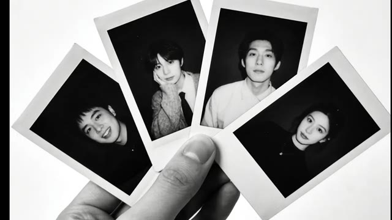
🔍 Agrandir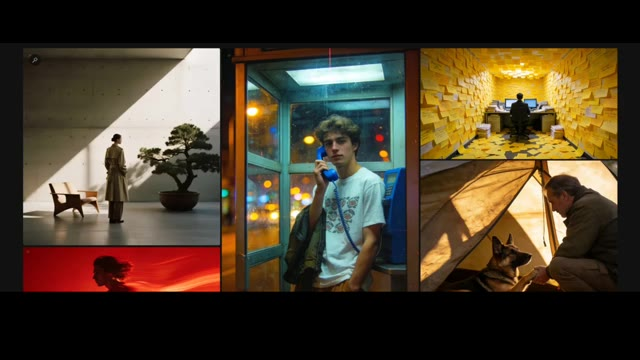
🔍 Agrandir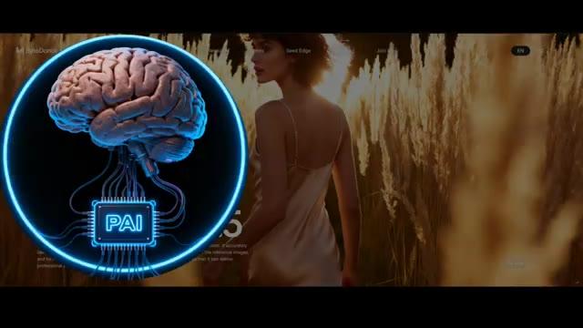
🔍 Agrandir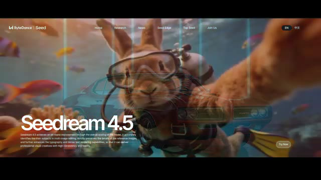
🔍 Agrandiren un seul endroit, du texte à l'image jusqu'à l'édition d'image avancée. Premièrement, Seadream 4.5 peut parfaitement préserver les traits du visage, l'éclairage, la tonalité des couleurs et d'autres détails d'une image de référence. Donc, si vous voulez supprimer des personnages en arrière-plan ou au premier plan, il peut le faire tout en gardant l'éclairage et les couleurs du personnage principal exactement identiques.
Interface & Outils : Interface web de Seedance / Seedream 4.5 (ByteDance).
Contenu textuel & Code : Texte affiché : "Seedream 4.5", "Consistency with Reference Image", ainsi que des descriptions textuelles et des exemples visuels (hamburger éclaté, paysages, personnages d'action).
Action / Démonstration : Présentation des capacités de conservation des détails d'image de référence et de modification sélective des éléments (suppression de personnages).
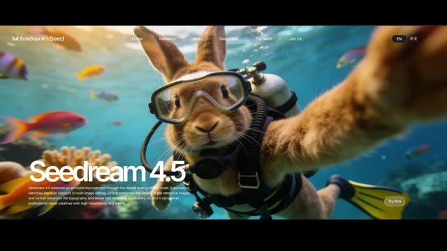
🔍 Agrandir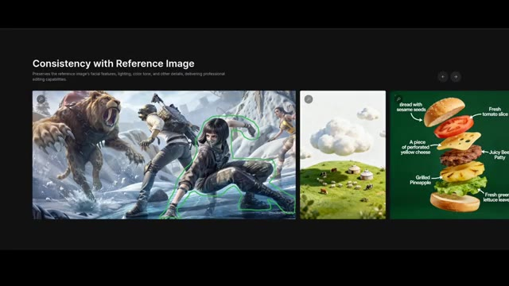
🔍 Agrandir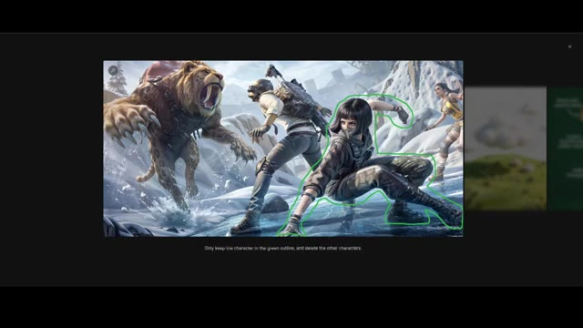
🔍 AgrandirVous pouvez également traduire n'importe quel texte dans l'image, changer les matériaux des vêtements et même actualiser les designs de texte tout en conservant la pose cohérente. Il peut également créer des images de présentation de produits propres et réalistes exactement comme celle-ci. Seadream 4.5 est également très fort pour les mises en page d'affiches.
Interface & Outils : Interface web de présentation de l'outil d'IA Seadream 4.5.
Contenu textuel & Code : Texte affiché sous les images : "Translate the image into Chinese, using a handwritten font, with all other content unchanged." et "Generate a best-selling product display image in a modern e-commerce platform style. Top title: "Today's Hot Sale"; main product in the middle of the image, price "$9.99" below it. Overall background: a vertical gradient transitioning from orange-pink to light purple-blue." En-tête : "Poster Layout and Logo Design" avec le texte descriptif "Offers designer-level composition and typography, together with clear and readable small text rendering, ideal for posters, brand visuals, and other creative scenarios."
Action / Démonstration : Démonstration visuelle des capacités de traduction de texte, de génération d'images de produits pour le e-commerce et de mise en page d'affiches par l'intelligence artificielle Seadream 4.5.
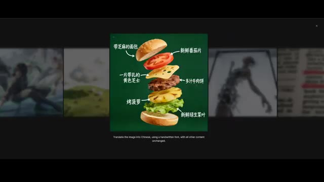
🔍 Agrandir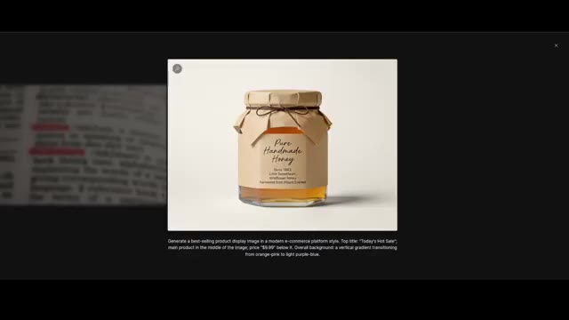
🔍 AgrandirCes affiches ont l'air professionnelles et accrocheuses. On ne devinerait même pas qu'elles ont été faites avec l'IA. Avec cet outil, vous n'avez plus besoin de concevoir des affiches manuellement. Il peut aussi gérer l'édition multi-images. Si vous lui demandez de combiner plusieurs images en une seule, il préserve parfaitement tous les personnages en arrière-plan.
Interface & Outils : Interface web de présentation d'un outil de design et de génération d'images par IA.
Contenu textuel & Code : Textes visibles : « Poster Layout and Logo Design », « Accurate Multi-Image Editing », et un prompt descriptif sous l'image agrandie : « Fairy Tale Book Cover: A little girl and a small fox stand in front of a glowing forest cabin... ».
Action / Démonstration : Navigation et présentation des fonctionnalités de conception d'affiches et de fusion d'images multiples de l'outil d'IA.
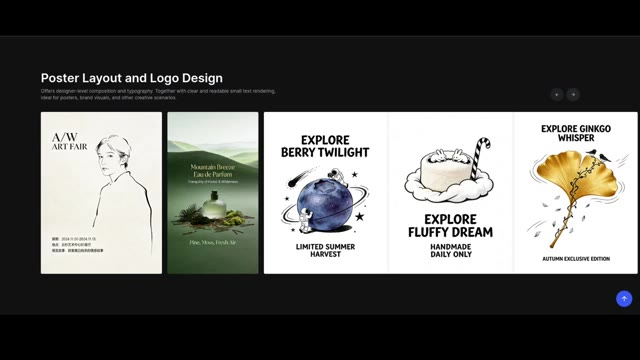
🔍 Agrandir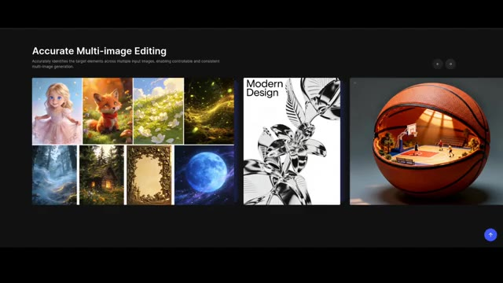
🔍 Agrandir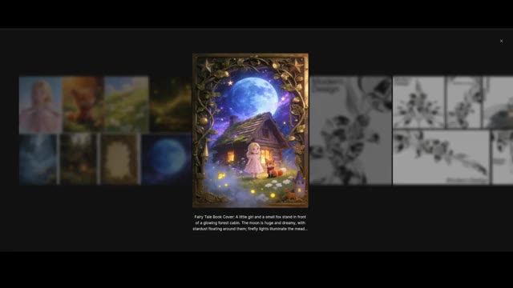
🔍 AgrandirEt si vous voulez la même image dans des formats d'image différents, vous pouvez générer plusieurs versions en une seule invite. Et cela préserve toujours le texte, la mise en page et la scène. Vous pouvez également générer des objets ou des éléments de jeu comme ce ballon dans de nombreux styles différents. Voici des exemples de texte à image. Ils ont l'air superbes et l'esthétique globale est très propre et soignée.
Interface & Outils : Interface de démonstration logicielle de génération d'images par IA présentant des exemples de prompts, de variations de formats et de rendus visuels.
Contenu textuel & Code : Texte affiché : « Based on this banner, create 6 posters. Maintain the same style and elements, but the layout of the elements can be adjusted. The aspect ratios are 1:1, 2:3, 4:3, 16:9, 1:2, and 9:16 respectively. », « Refer to the creativity of the input image and generate 4 separate imaegs for soccer, volleyball, golf, and tennis. », et « Nighttime outdoor photoshoot: A young man stands inside a public phone booth, holding a blue phone receiver to his ear. One hand is cas... »
Action / Démonstration : Présentation visuelle et défilement d'exemples de générations d'images par IA illustrant la cohérence de style, les différents formats d'aspect et la création d'objets.
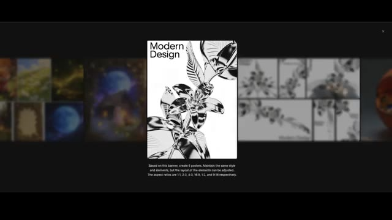
🔍 Agrandir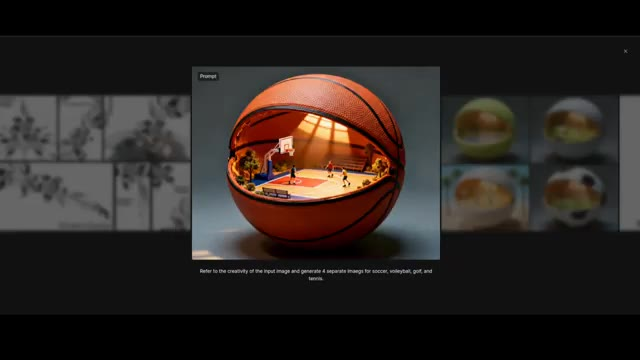
🔍 Agrandir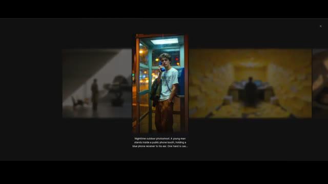
🔍 AgrandirRegardez cette photo de pose longue. Elle gère magnifiquement l'éclairage et la composition de la scène. Si vous consultez les benchmarks sur leur site web comparant Seedream 4 et Seedream 4.5, la nouvelle version bat l'ancienne dans toutes les catégories. Mais c'est là que les choses deviennent intéressantes. Car même si CDream 4.5 montre des améliorations massives de la qualité d'édition, de la cohérence des personnages et de la génération de posters, les benchmarks publics racontent une histoire légèrement différente.
Interface & Outils : Site web de présentation et de benchmarks de modèles d'intelligence artificielle.
Contenu textuel & Code : Texte affiché sous l'image : « Dynamic Motion Portrait: A dynamic long-exposure shot of a person in motion against a vivid red background, creating a fluid and artistic visual effect. » Graphiques MagicBench : « Text-to-Image Radar Chart » et « Single-Image Editing Radar Chart » comparant Seedream 4.5 (bleu foncé) et Seedream 4.0 (bleu clair). Tableau des classements avec les modèles : flux-2-pro, seedream-4.5, imagen-4.0-ultra, seedream-4-2k, wan2.5-t2i-preview, gpt-image-1, etc.
Action / Démonstration : Navigation et présentation des résultats de tests de performance et de génération d'images par IA.
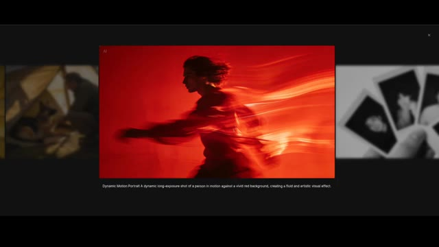
🔍 Agrandir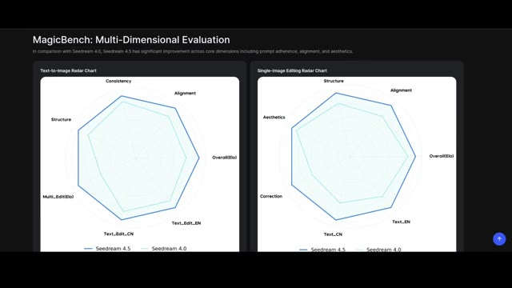
🔍 Agrandir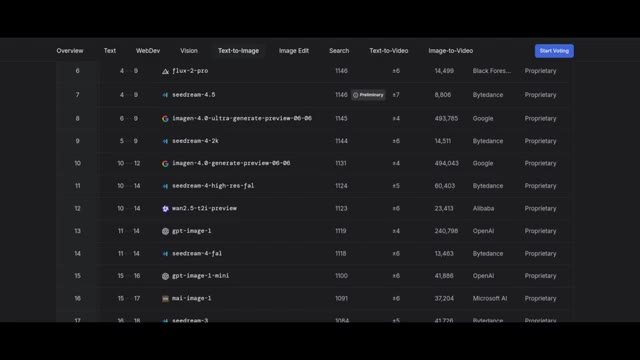
🔍 AgrandirSur le classement texte-image d'Ella Marina, qui compare des centaines de modèles, CDream 4.5 n'est que deux points plus haut que CDream 4 au moment de cet enregistrement. Juste deux points. Et cela crée un vrai rebondissement. Soit le classement ne saisit pas pleinement les nouvelles forces du modèle, soit Seedream 4 était déjà si fort qu'une mise à niveau majeure fait à peine bouger le score.
Interface & Outils : Tableau de classement en ligne (Leaderboard) avec des onglets de navigation (Overview, Text, WebDev, Vision, Text-to-Image, Image Edit, Search, Text-to-Video, Image-to-Video) et un bouton "Start Voting".
Contenu textuel & Code : Le tableau liste plusieurs modèles d'IA avec leurs scores et créateurs : rang 6 (flux-2-pro, 1146 points, Black Forest Labs), rang 7 (seedream-4.5, 1146 points, badge "Preliminary", Bytedance), rang 8 (imagen-4.0-ultra-generate-preview-06-06, 1145 points, Google), rang 9 (seedream-4-2k, 1144 points, Bytedance), rang 10 (imagen-4.0-generate-preview-06-06, 1131 points, Google), rang 11 (seedream-4-high-res-fal, 1124 points, Bytedance), rang 12 (wan2.5-t2i-preview, 1123 points, Alibaba), rang 13 (gpt-image-1, 1119 points, OpenAI), rang 14 (seedream-4-fal, 1118 points, Bytedance), rang 15 (gpt-image-1-mini, 1100 points, OpenAI), rang 16 (mai-image-1, 1091 points, Microsoft AI), rang 17 (seedream-3, 1084 points, Bytedance). Tous les modèles affichent le statut "Proprietary".
Action / Démonstration : Affichage fixe du classement comparatif des modèles d'intelligence artificielle texte-image.
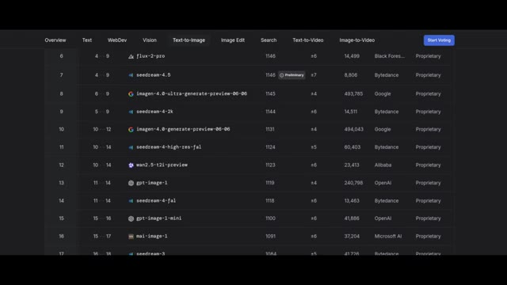
🔍 AgrandirDonc la grande question est, est-on en train d'atteindre un point où les améliorations deviennent plus difficiles à mesurer, ou est-ce que Seedream 4.5 surpasse discrètement les attentes d'une manière que les benchmarks ne montrent pas encore ?
Interface & Outils : Tableau de classement de type LMSYS (Chatbot Arena ou équivalent orienté images) avec des onglets de navigation en haut (Overview, Text, WebDev, Vision, Text-to-Image, Image Edit, Search, Text-to-Video, Image-to-Video).
Contenu textuel & Code : Le tableau présente plusieurs modèles d'IA avec leurs scores et classements. On peut y voir : flux-2-pro (6e), seedream-4.5 (7e, étiqueté 'Preliminary'), imagen-4.0-ultra-generate-preview (8e), seedream-4-2k (9e), imagen-4.0-generate-preview (10e), seedream-4-high-res-fal (11e), wan2.5-t2i-preview (12e), gpt-image-1 (13e), seedream-4-fal (14e), gpt-image-1-mini (15e), mai-image-1 (16e). Les colonnes affichent les classements, les scores ELO/scores de performance, et les créateurs (Black Forest Labs, Bytedance, Google, Alibaba, OpenAI, Microsoft AI).
Action / Démonstration : Visualisation d'un classement de modèles d'intelligence artificielle text-to-image soulignant la position du modèle Seedream 4.5.
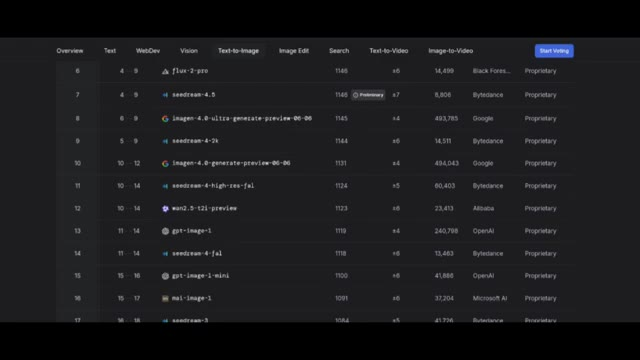
🔍 Agrandir